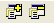

| Getting Started Guide for Boa Constructor |
| Getting Started Guide for Boa Constructor |
While viewing an Application (any of its views) you may select an
item from the 'New' pane in the Palette and it will be added to the
Application.

Note: The Panel1 listed as a
module above is NOT the same as the Panel1 contained in Frame1!
| Getting Started Guide for Boa Constructor |